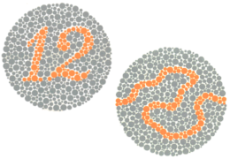
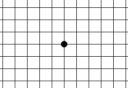

Przetestuj swój wzrok
Na tej stronie możesz wykonać kilka prostych badań wzroku.


Test Amslera
Test widzenia w obrębie dołka środkowego siatkówki, pomaga w wykryciu zwyrodnienia siatkówki lub problemów z nerwem wzrokowym.
Test Amslera